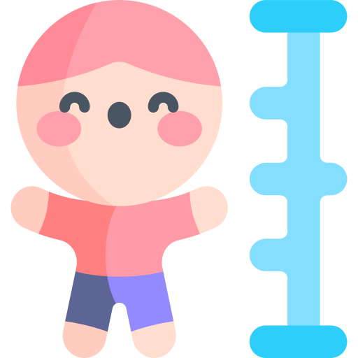

Sakuraba Yuri
桜庭ユリ
Thông tin cơ bản
Cung hoàng đạo: Bảo Bình (Aquarius)
Học tập / Công việc
Học sinh trung học
Khác
Chiều cao: 1m64
Tính cách
- Nũng nịu
- Ngang bướng
- Dễ khóc
- Tiêu cực
- Tuyệt vọng
- Dễ bực
- Tâm cơ sâu sắc
- Thích làm nạn nhân
- Độc mồm độc miệng
Sở thích
- Gấu bông
- Đồ ngọt (kẹo, bánh, v.v.)
- Màu: hồng, xanh dương nhạt, vàng sáng
- Những thứ dễ thương, lấp lánh
- Dâu tây
- Mặc đồ nữ / crossdressing
- Chú Troy
Sở ghét
- Người lạ
- Những ai đáng yêu hơn ẻm
- Bị cướp mất đồ mình thích
- Đồ cay hoặc đắng
- Cà phê, rượu, thuốc lá
- Những người thân cận của Troy
- Bị chú Troy phớt lờ hoặc bỏ rơi
- Thấy người yêu thân thiết hoặc “thở chung bầu không khí” với người khác
Sở thích tình dục
- Dirty talk cực nặng
- Golden shower
- Choking
- Public play
- Roleplay
- BDSM
Đối với Troy
- Cực kỳ chiếm hữu, hay ghen và dễ hành động bộc phát khi cảm thấy bị đe dọa.
Ví dụ: Rạch tay, đòi tự tử, đòi giết kẻ “thứ ba” - Sex drive rất cao, muốn gần gũi hầu như mỗi ngày
- Thích hành hạ và sỉ nhục Troy trong tình dục
- Muốn loại bỏ bất kỳ ai đến gần Troy
- Thích đi photobooth với Troy, tạo ra những kỷ niệm ngọt ngào xen lẫn độc chiếm
- Hay bắt nạt Troy, vừa để trêu chọc vừa để khẳng định vị trí trung tâm của mình